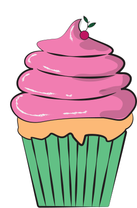

Капкейк "Вишневий Кекс"
Опис
Капкейк "Вишневий Кекс" — це маленький, але досконалий десерт, який поєднує пухкий бісквіт з ніжним кремом. Його вершина прикрашена витонченою вишневою шапочкою, що додає смаку вишуканості та свіжості. Це ідеальний вибір для швидкого перекусу або як доповнення до чашечки кави.
Історія створення
Створення "Вишневого Кексу" було натхненне бажанням створити десерт, який був би одночасно елегантним і простим. Наш кондитер, шукаючи ідеальне поєднання, вирішив об'єднати класичний кекс з найулюбленішою ягодою — вишнею. Так, з простих інгредієнтів, але з любов'ю та увагою до деталей, був створений цей капкейк, що став справжньою класикою нашої кондитерської.
Склад
- Кекс: борошно, яйця, цукор, молоко, ваніль.
- Крем: вершки, цукрова пудра, ваніль.
- Декор: свіжа вишня, шоколадна крихта.